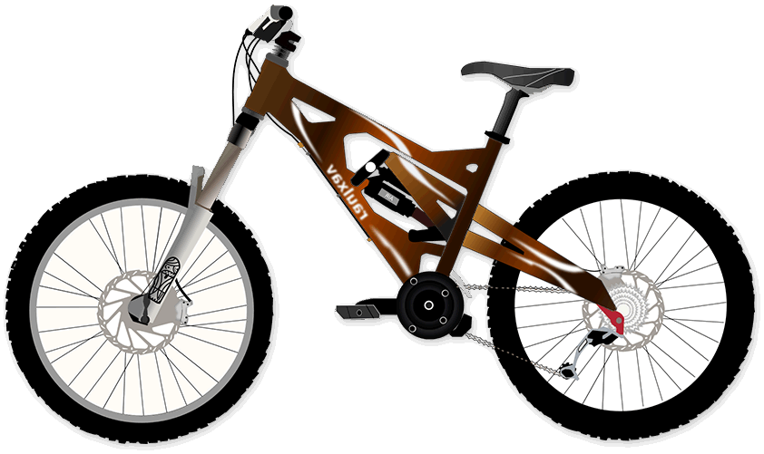

Veja os nossos modelos Espetaculares

-
O modelo New York Bick foi desenvolvida para quem quer realizar um passeio e pegar trilhas leves. Com seu quadro em alumínio 6061, fornece segurança e leveza no seu pedal. Possuí também freio a disco, que oferece uma maior segurança. Possuí diversas cores que garante um estilo próprio para você. Quadro em alumínio 6061. Abraçadeira alumínio de selim 31,8mm com blocagem. Alavancas de câmbio ez-fire 8 velocidades. Aro aéro 29 parede dupla 36f. Caixa de direção semi-integrado. Câmbio dianteiro Sunrun/Yamada. Cambio traseiro Sunrun/Yamada. Câmara de ar 29. Pedivela coroa triplo revestido. Canote de selim 27.2mm com carrinho. Corrente 8 velocidades. Cubo rosca com blocágem. Espaçador alumínio 10 mm. Garfo suspensão mecânico. Guidão alumínio 31.8mm reto. Kit cabo com conduiter com teflonn. Mesa alumínio 31.8mm. Movimento central rolamentado 122mm. Pedal em nylon preto. Pinça de freio a disco com rotor de 160mm mecânico. Pneu 29. Raio 285x2.0mm aço preto. Roda livre 8 velocidades index. Selim mtb.
O-R w308 é ideal para quem quer começar a pedalar, realizar passeios e utilizar no dia-a-dia. São 4 tipos de tamanhos de quadro e cores para você escolher, o peso total da bike é de 15kg montada. A Bike é direta da Fábrica Oficial com mais de 26 anos no mercado e garantia exclusiva com suporte diferenciado. Suporta até 100kgs. sistema de marchas sistema de marchas da bicicleta é um dos mais importantes componentes, é como se fosse o ?coração? da sua bike. câmbios Gtsm1 TSI tem alta durabilidade e qualidade de sobra, ajudando você a ter alta performance em sua bike, veja do que é composto: * CÂMBIO TRASEIRO GTSM1 TSI 7v * CÂMBIO DIANTEIRO GTSM1 TSI 3v * ENGRENAGEM STEEL IMP. AÇO 28/38/48 * RODA LIVRE INDEX 7V IMP. 13-28

- 
Essa é a fabulosa VAX a bicicleta dos seus sonhos literamente, esse modelo e uma categoria especial de nossa loja onde o cliente monta a sua bicke com as caracteristicas que ele deseja com toda a disponibilicade de peças possiveis para tunar sua biscicleta e deixar ela a sua cara, nos tambem oferecemos uma consultoria para lhe ajudar a decidir as melhores configurações para a sua biscicleta.